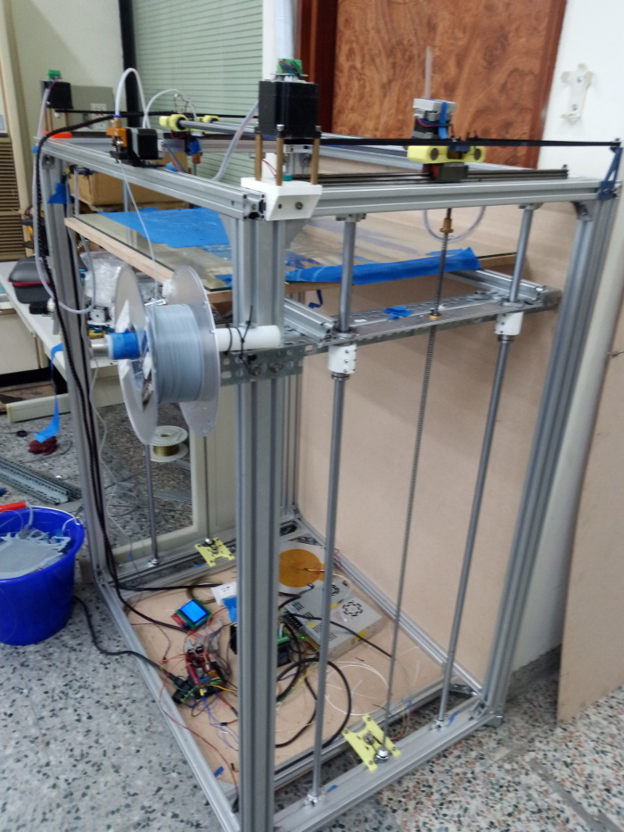
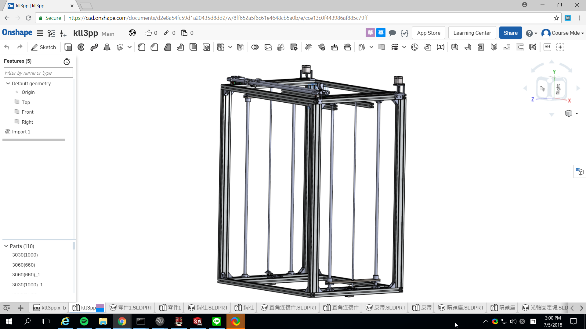
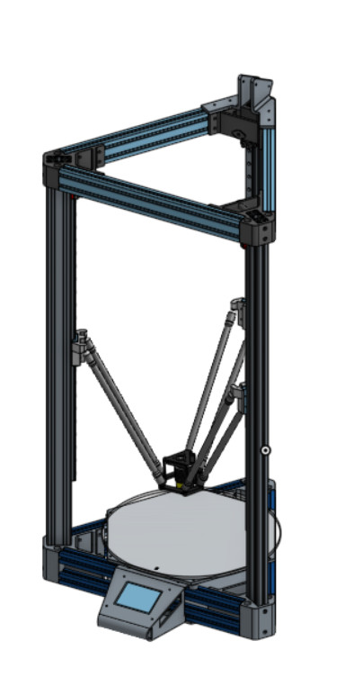

分組專題人員: 六人
機構設計: 三人
程式控制: 三人
XYZ 架構
https://github.com/mdecourse/kll3pp


Delta 架構
分組專題人員: 六人
Delta 3D 印表機 (Onshape 連結)

https://reprap.org/wiki/RepRap
RepRap - The Replicating Rapid Prototyper.pdf
Advances in 3D Printing & Additive Manufacturing Technologies
https://link.springer.com/book/10.1007/978-981-10-0812-2